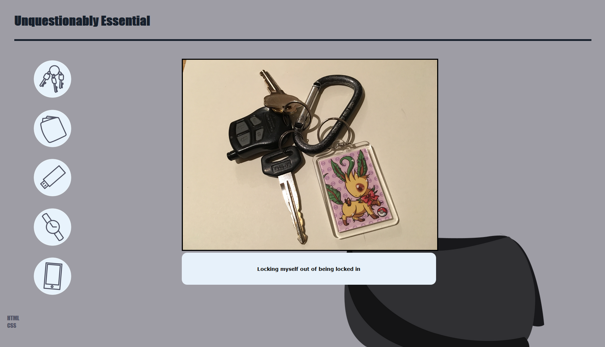
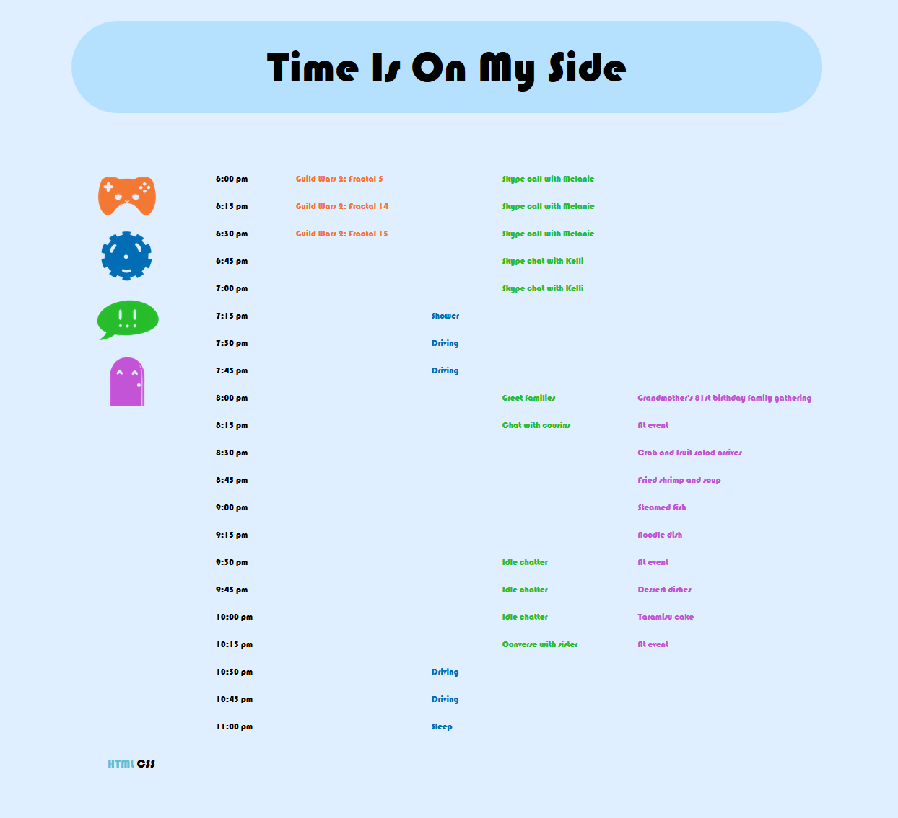

February 4th, 2016

Pocket Full of Interface
I made an attempt at fixing my resizing issues in this one, using mostly percentage sizing. Hopefully it all looks good on
smaller screens. I kept the spacing even and didnt clutter anything with the images. I kept the colors more muted and even
as well this time. Each button will open their corresponding image, but won't overlap as each one will close the others. The
same will go for the text boxes after clicking on the images. These will close on a 2nd click, or on clicking a new icon.
I think that keeping everything simple and functional is the key step here. I do wish to have done some additional animations,
but the icons were refusing to cooperate.
January 27th, 2016

Ex3 Interface
I was pressed for time to finish this, so the interface is not exactly as polished and entirely eye catching as I'd like it
to be. I do believe it functions just fine, however. The information is clean and simple and the buttons are color and stands out.
The buttons in the navigation should be easy enough to figure out, the minimal information before even interacting with the
images should push the user towards mousing over or clicking on them. It fills all of the requirements according to the
assignment, but I do wish that I had put some more time into a more engaging design.
January 11th, 2016

Paint Tool SAI interface
I have always praised SAI for its accessable and easy to use interface. It is real simple compared to something like Photoshop: a program that requires
perhaps years to master and hours to even pick up. SAI places nearly everything you need in one screen without the need to go windows or options digging
in order to find one function you may need. Layers, color wheel, swatches, brush settings, and your canvas. That is all any simple artist wants to see
and use when making a drawing or painting. It's not entirely perfect however, a lot of the options do not have any tooltips, meaning if you don't have any
prior experience at all with how a digital drawing software works, you may not understand all the terms or icons and may have to experiement to find out.
Granted, that's fairly easy and fun to do. I've had an overall positive experience with this software. I was able to pick up my pen and draw almost
immediately after launching the program and it's my goto program for digital art.